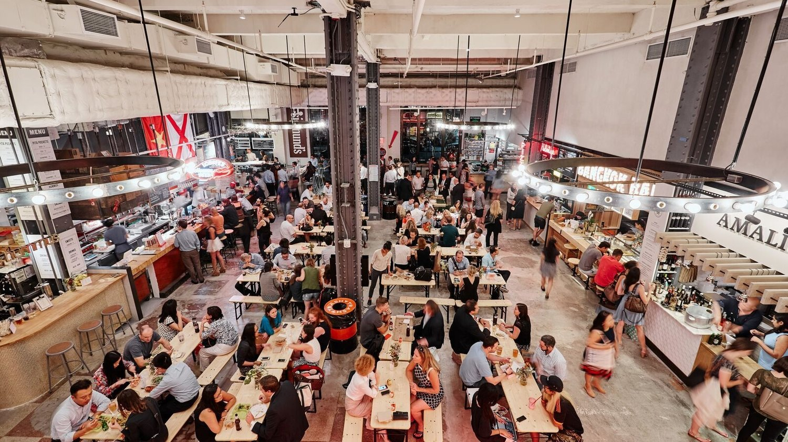

December 27 (NYC Kickoff · Big Bus · Sunset at SUMMIT)
6:00 AM – 8:00 AM
Arrive at Newark (EWR) → Transfer to Manhattan → Breakfast near hotel.
9:00 AM – 9:30 AM

Activate Big Bus (Downtown Loop). 24‑hour pass ~$60.
9:45 AM – 12:15 PM
Statue of Liberty (Ferry from Battery Park). Ticket ~$25–30. Allow 2–2.5 h incl. ferry and museum.
12:20 PM – 12:40 PM

Wall Street Christmas Tree (photo stop). Free.
12:45 PM – 1:15 PM
💸 Cheap Eat (FiDi): Los Tacos No. 1 — quick tacos ~$5 each (Oculus/Westfield). Great value & super fast.
1:20 PM – 1:30 PM
Walk toward Brooklyn Bridge (digest & photo stops on the way).
1:30 PM – 2:10 PM
Brooklyn Bridge (walk partway and back). Free.
2:15 PM – 2:45 PM
💸 Cheap Eat (Chinatown): Vanessa’s Dumpling House — dumplings & sesame pancakes ~$5–8.
4:00 PM – 5:30 PM

SUMMIT One Vanderbilt (best day→sunset→night combo). Ticket ~$44–55.
5:40 PM – 6:00 PM
💸 Cheap Eat (near Grand Central): Urbanspace Vanderbilt Food Hall — many stalls; budget plates ~$10–15.

6:10 PM – 6:45 PM

Rockefeller Center Tree & Rink (view free; skating ~$30–45).
7:00 PM – 7:45 PM

Bryant Park Winter Village (free to enter; skate rental ~$18–25).
8:00 PM – 10:00 PM

Times Square (open 24/7). Night lights photos.